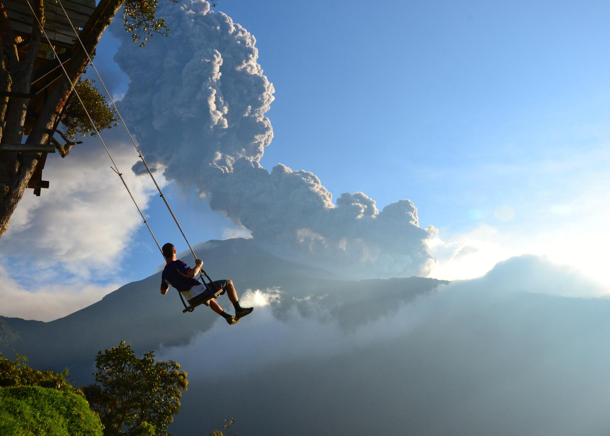

Baños
Baños es una hermosa ciudad en la cordillera de los Andes que es conocida por sus aguas termales y aventuras al aire libre. La ciudad es el punto de partida para muchas actividades, como senderismo, rafting, parapente y paseos en bicicleta. Además, la ciudad es el hogar de una impresionante cascada, la Cascada de la Virgen, y una iglesia dedicada a la Virgen de Agua Santa.
